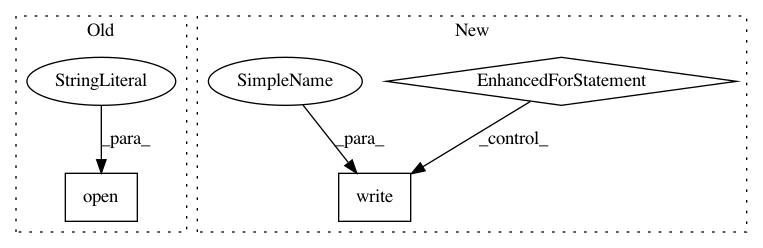

aa1a4d85f30db26a7ef9d3c7dc7692bb00f7a5e5,examples/download.py,,download_data,#,43
Before Change
os.mkdir(path)
response = requests.get(url)
with open(os.path.join(path, name), "w") as f:
f.write(response.content)
After Change
// Fetch the response in a streaming fashion and write it to disk.
response = requests.get(url, stream=True)
with open(dlpath, "wb") as f:
for chunk in response.iter_content(65536):
f.write(chunk)
// If verify, compare the signature
if signature is not None:
dlsignature = sha256sum(dlpath)
if signature != dlsignature:
raise ValueError(
In pattern: SUPERPATTERN
Frequency: 3
Non-data size: 3
Instances
Project Name: DistrictDataLabs/yellowbrick
Commit Name: aa1a4d85f30db26a7ef9d3c7dc7692bb00f7a5e5
Time: 2016-10-13
Author: benjamin@bengfort.com
File Name: examples/download.py
Class Name:
Method Name: download_data
Project Name: yangyanli/PointCNN
Commit Name: 632ffd19e4edb2077b2c27a50f1654b7453797e6
Time: 2019-03-28
Author: burui11087@gmail.com
File Name: data_conversions/prepare_semantic3d_filelists.py
Class Name:
Method Name: main
Project Name: astroML/astroML
Commit Name: 4227f7c2810a6fc48165311e19a4a6aaac38475e
Time: 2019-04-16
Author: bsipocz@gmail.com
File Name: astroML/datasets/sdss_specgals.py
Class Name:
Method Name: fetch_sdss_specgals